Manual de Usuario
Sistema de Asistencia del ISFT N.° 38
Cómo utilizar esta guía
Lea primero “Acceso y primeros pasos” y luego vaya al capítulo de su rol. Cada procedimiento indica la tarea, los pasos y el resultado que debe observar. Los nombres de botones aparecen tal como se muestran en pantalla.
Documentación relacionada: Manual del Desarrollador — Sistema de Asistencia.
Índice
| 1. Presentación y alcance | 2. Perfiles de usuario |
| 3. Requisitos, acceso y registro | 4. Interfaz y primeros pasos |
| 5. Alumno | 6. Profesor |
| 7. Preceptor | 8. Directora de asistencia |
| 9. Mensajes y resolución de problemas | 10. Preguntas frecuentes |
| 11. Glosario | 12. Soporte y consulta rápida |
1. Presentación y alcance
El Sistema de Asistencia es un módulo web integrado al portal del ISFT N.° 38. Centraliza alumnos, materias, planillas diarias, códigos QR e indicadores de asistencia. Reduce el uso de planillas separadas y permite que cada persona vea únicamente la información correspondiente a su función.
¿Qué problema resuelve?
| Necesidad | Respuesta del sistema |
|---|
| Registrar una clase sin duplicar filas. | Mantiene un único estado por alumno, materia y fecha. |
| Agilizar la toma de asistencia. | Permite completar una planilla o habilitar un QR para presente/tardanza. |
| Conocer la situación de cursada. | Calcula presentes, ausentes, tardanzas, justificaciones y porcentaje. |
| Restringir información. | Aplica permisos por rol, carrera y materia asignada. |
Qué incluye
- Inicio y cierre de sesión, registro de alumnos y panel según rol.
- Asignación de alumnos y profesores a materias.
- Planilla diaria, QR, historial, porcentajes y listados imprimibles.
- Administración de alumnos, preceptores, carreras y materias dentro del ámbito habilitado.
Qué no incluye
No reemplaza al sistema académico completo, no realiza la inscripción formal a una carrera, no valida certificados médicos, no envía sanciones automáticamente y no permite modificar planillas históricas desde la interfaz.
Privacidad: no comparta contraseñas, capturas con datos personales ni enlaces QR activos. Cierre siempre la sesión en equipos compartidos.
2. Perfiles de usuario
| Perfil | Puede realizar | Límite principal |
|---|
| Alumno | Consultar materias e historial; registrar presente o tardanza mediante QR. | Solo materias a las que está asignado. |
| Profesor | Gestionar alumnos de sus materias, tomar asistencia, generar QR, consultar porcentajes e imprimir. | Solo materias asociadas a su horario. |
| Preceptor | Administrar alumnos, profesores, materias y asignaciones. | Solo carreras que le asignó la directora. |
| Directora de asistencia | Todo lo anterior; crear preceptores y distribuir carreras. | Debe confirmar la sustitución de responsables. |
Se requiere manejo básico de navegador, formularios y, para escanear QR, cámara de teléfono. No se necesitan conocimientos técnicos.

Figura 1. Panel de alumno: acceso directo a sus materias y estado general.
3. Requisitos, acceso y registro
3.1 Requisitos
- Computadora, tableta o teléfono con un navegador actualizado.
- Conexión a la red donde está publicado el sistema; JavaScript y cookies habilitados.
- Cámara y permiso de cámara para leer QR desde el teléfono.
- Impresora o “Guardar como PDF” solo para conservar listados.
3.2 Iniciar sesión
- Abra la dirección institucional y entre en /asistencia.
- Seleccione Iniciar sesión.
- Escriba el DNI —si es alumno— o el correo electrónico y la contraseña.
- Active Recordarme únicamente en un dispositivo personal.
- Presione Entrar.
Resultado esperado: aparece “Ingresaste correctamente” y se abre el panel del rol.
3.3 Crear la primera cuenta
Un alumno puede elegir Registrarse y completar nombre, apellido, DNI, CUIL, carrera, correo y una contraseña de por lo menos ocho caracteres. El profesor debe ser validado y asignado por preceptor/directora. El preceptor es creado por la directora junto con una o más carreras.
3.4 Cerrar sesión
- Presione Cerrar sesión en el encabezado.
- Compruebe el aviso “Sesión cerrada”.
4. Interfaz y primeros pasos
| Zona | Uso |
|---|
| Encabezado | Identifica el módulo, el usuario y contiene el cierre de sesión. |
| Mensajes | Verde: acción correcta. Rojo: error o falta de permisos. Amarillo: configuración pendiente. |
| Mis materias | Materias disponibles para alumno o profesor. |
| Panel del profesor | Alumnos, planilla, porcentajes, impresión y QR. |
| Panel administrativo | Alumnos, usuarios, profesores, asignaciones, carreras y materias. |
| Filtros | Reducen la lista visible; no modifican información. |
Primera comprobación recomendada
- Alumno: abra una materia y confirme sus datos.
- Profesor: abra una materia y revise “Alumnos de la materia”.
- Preceptor: seleccione carrera y compruebe las materias configuradas.
- Directora: revise carreras y responsables antes de reasignarlos.
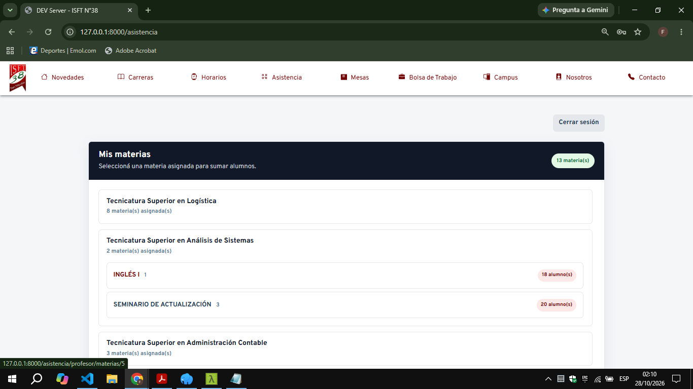
Figura 2. Panel del profesor con las carreras, materias y cantidad de alumnos asignados.
5. Procedimientos del alumno
5.1 Consultar una materia
- Inicie sesión y ubique Mis materias.
- Presione Ver materia.
- Revise profesor, historial, clases totales, presentes, ausentes, tardanzas, justificaciones y porcentaje.
La tardanza vale media presencia. La justificación se informa, pero no suma presencia. Cuando existe planilla de una fecha y el alumno no tiene registro, el sistema la muestra como ausencia automática.
El panel alerta si el porcentaje está por debajo del mínimo: 80 % en prácticas o prácticas profesionalizantes y 70 % en las demás materias.
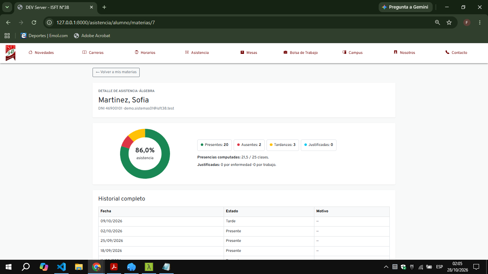
Figura 3. Resumen e historial visible para el alumno.
5.2 Registrar asistencia con QR
- Inicie sesión como alumno.
- Use Escanear QR y permita la cámara, o abra el enlace desde la cámara del teléfono.
- Enfoque el código que muestra el profesor.
- Compruebe el mensaje de registro como presente o tardanza.
El QR debe estar habilitado, pertenecer a la materia asignada y ser del día actual. Si falla, no insista con capturas antiguas: solicite un nuevo código al profesor.
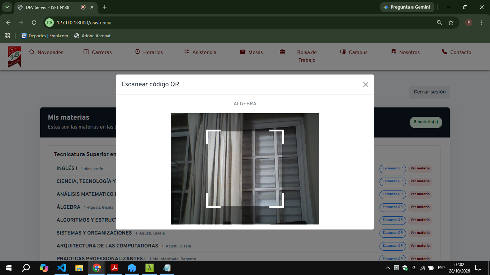
Figura 4. Ventana de escaneo QR con la cámara habilitada para la materia seleccionada.
6. Procedimientos del profesor
6.1 Agregar o quitar alumnos
- Abra una materia desde Mis materias.
- Despliegue Sumar alumnos y busque por nombre, apellido, DNI o correo.
- Marque uno o más alumnos y presione Agregar alumnos seleccionados.
- Compruebe que aparezcan en “Alumnos de la materia”.
- Para quitar uno, use Quitar y confirme.
Quitar elimina la asignación a la materia, no la cuenta general del alumno.
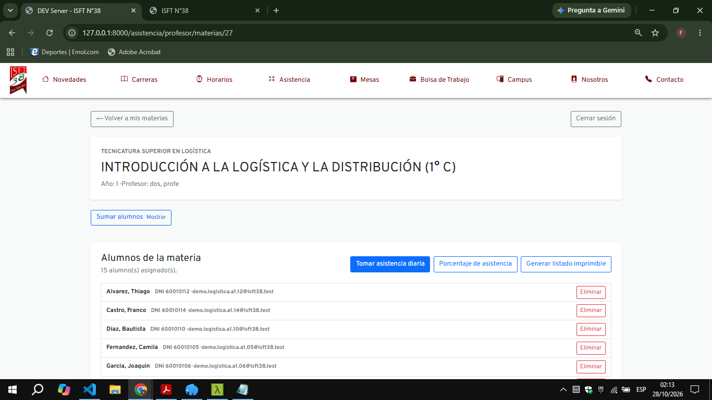
Figura 5. Gestión de una materia, alumnos asignados y accesos a planilla, porcentajes e impresión.
6.2 Tomar asistencia diaria
- Entre en la materia y presione Tomar asistencia diaria.
- Confirme la fecha. Solo hoy puede modificarse.
- Elija para cada alumno: Presente, Ausente, Tarde o Justificado.
- Si es justificado, indique Enfermedad o Trabajo.
- Presione Guardar asistencia del día o Guardar cambios.
- Compruebe la confirmación.
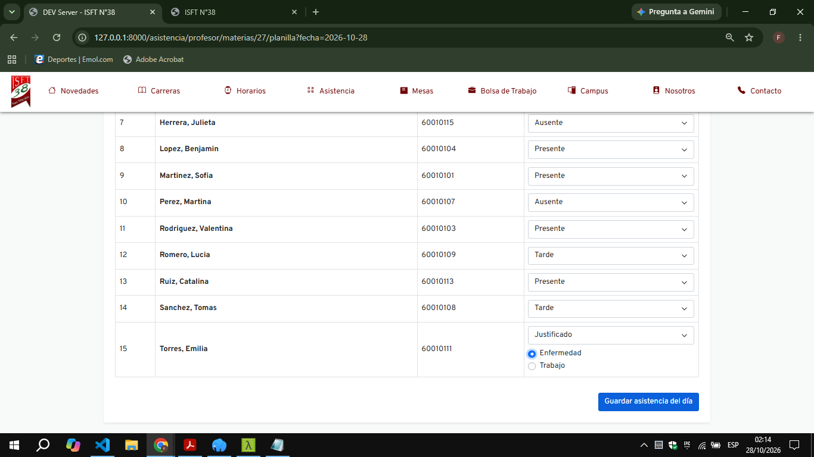
Figura 6. Selección de estados, motivo de justificación y guardado de la asistencia del día.
6. Profesor: planilla, QR y porcentajes
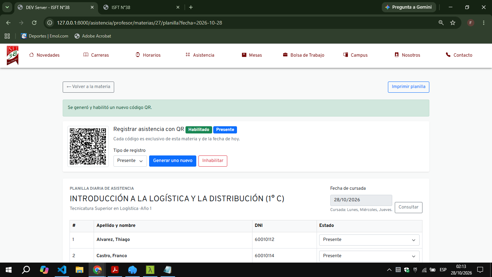
Figura 7. Planilla diaria con el QR habilitado y los controles para generar o inhabilitar el código.
6.3 Generar y cerrar un QR
- Abra la planilla de hoy.
- En “Código QR de asistencia”, elija Presente o Tardanza.
- Presione Generar uno nuevo y muéstrelo a los alumnos.
- Use Inhabilitar al terminar. Puede volver a habilitar el último código del día.
Cada QR nuevo inhabilita los anteriores de esa materia y fecha. Un segundo escaneo del mismo alumno actualiza el registro único y no crea duplicados.
6.4 Consultar una planilla anterior
- Abra la planilla de la materia.
- Seleccione una fecha habilitada en Fecha de cursada.
- Presione Consultar.
- Revise los estados guardados. Las fechas anteriores son únicamente de lectura.
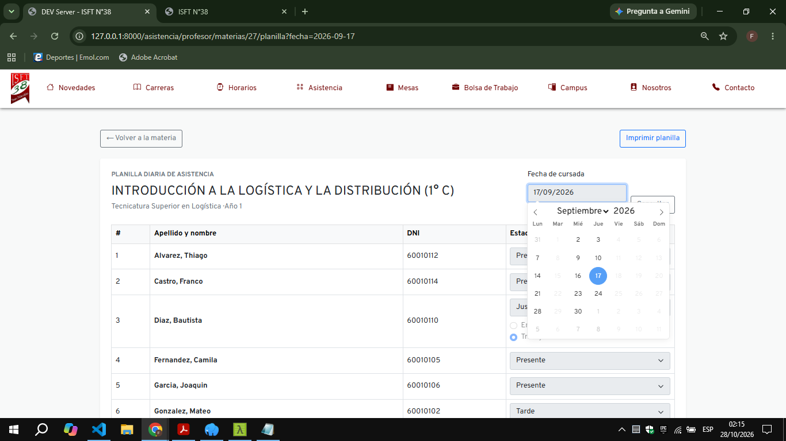
Figura 8. Selector de fechas para consultar una planilla correspondiente a una clase anterior.
6.5 Consultar porcentajes e imprimir
- Abra Porcentaje de asistencia.
- Escriba un máximo entre 1 y 100 para ver alumnos debajo de ese valor, o use Mostrar todos.
- Seleccione un alumno para ver fechas y estados.
- Use Generar listado imprimible o Imprimir planilla; el navegador permite imprimir o guardar como PDF.
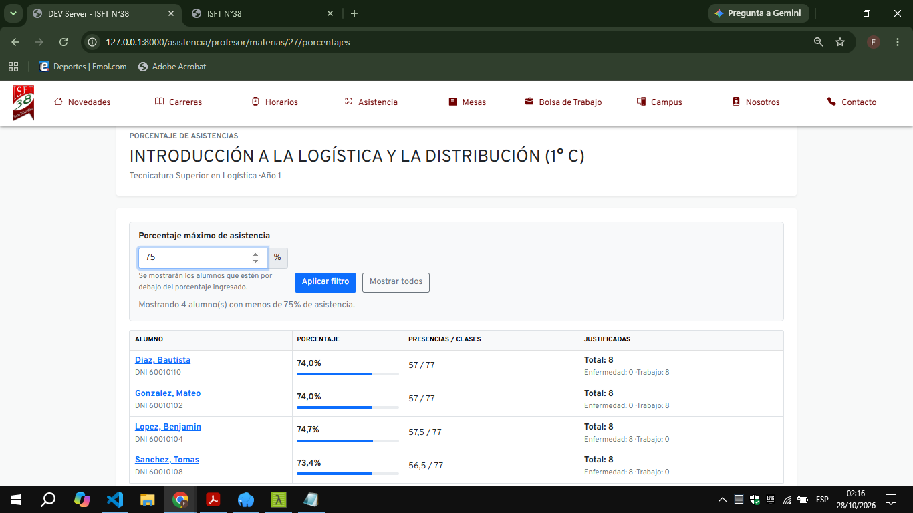
Figura 9. Filtro de porcentaje y listado de alumnos que se encuentran por debajo del valor indicado.
7. Procedimientos del preceptor
7.1 Trabajar dentro de una carrera
- Presione Cambiar carrera.
- Seleccione una de las carreras asignadas.
- Presione Usar esta carrera.
- Compruebe que el nombre de la carrera seleccionada aparezca en el panel.
Los listados, búsquedas y altas quedan limitados a la carrera activa.
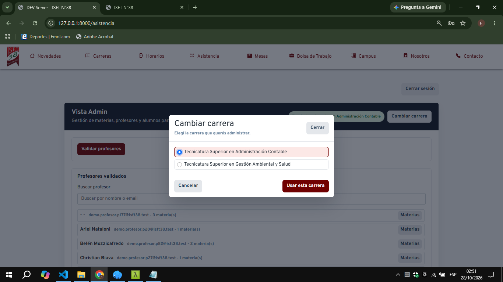
Figura 10. Selección de la carrera que administrará el preceptor.
7.2 Administrar alumnos
- Abra ABM de alumnos por carrera.
- Para crear, complete nombre, apellido, DNI, CUIL, correo, carrera y contraseña confirmada.
- Presione Guardar alumno. Se vinculan ficha académica y acceso mediante el DNI.
- Para editar, cambie los campos y use Actualizar alumno; deje la contraseña vacía para conservarla.
- Para eliminar definitivamente, use Eliminar alumno y acceso y confirme.
Atención: la eliminación borra asignaciones y asistencias relacionadas. No la utilice para un cambio de materia o carrera.
7.3 Validar profesores
- Busque al profesor pendiente de la carrera.
- Seleccione y presione Validar seleccionados como profesor.
- En profesores validados, abra Materias.
- Seleccione carrera/año, marque materias y guarde.
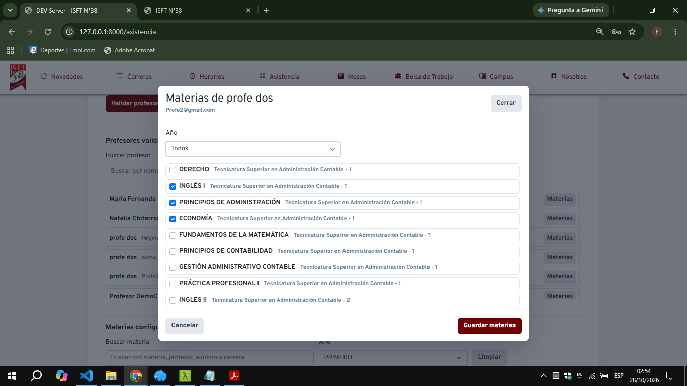
Figura 11. Selección y guardado de las materias asignadas a un profesor validado.
7. Preceptor: asignaciones y configuración
7.4 Consultar materias configuradas
- Ubique la sección Materias configuradas.
- Busque por materia, profesor, alumno o carrera.
- Seleccione el año para reducir el listado.
- Revise el profesor y la cantidad de alumnos de cada materia.
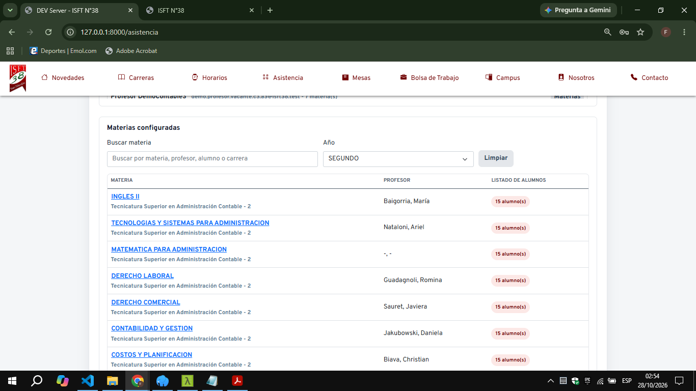
Figura 12. Listado de materias configuradas, profesor responsable y cantidad de alumnos.
7.5 Asignar alumnos y profesores
- En Asignar alumno a materia, elija ambos registros y confirme.
- En Materias configuradas, abra la materia o quite asignaciones cuando corresponda.
- La materia solo puede quedar a cargo del profesor configurado en su horario. Revise cualquier aviso de sustitución.
7.6 Consultar e imprimir una materia
- Seleccione el nombre de una materia configurada.
- Revise carrera, año, profesor y cantidad de alumnos.
- Compruebe el listado con presencias, clases y porcentaje.
- Presione Imprimir si necesita una copia en papel o PDF.
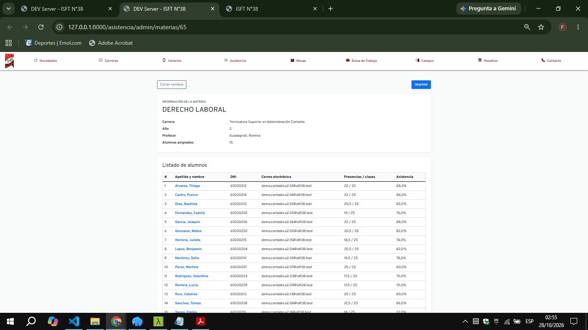
Figura 13. Detalle de la materia y listado de alumnos con sus porcentajes de asistencia.
7.7 Editar carrera o materia
- Localice el registro dentro de la carrera habilitada.
- En carreras, modifique nombre/descripcion, años, resolución, carpeta o texto permitido.
- En materias, modifique nombre/descripcion, carrera, año, profesor u orden.
- Guarde y verifique el aviso verde.
8. Procedimientos de la directora
La directora de asistencia ve todas las carreras y puede crear preceptores o cambiar sus ámbitos. Las tareas de alumnos, profesores, materias y asignaciones se realizan igual que en el capítulo anterior.
8.1 Crear un preceptor
- Abra la sección de usuarios/preceptores.
- Complete nombre, correo y contraseña.
- Seleccione al menos una carrera.
- Guarde y compruebe que el usuario aparezca en el listado.
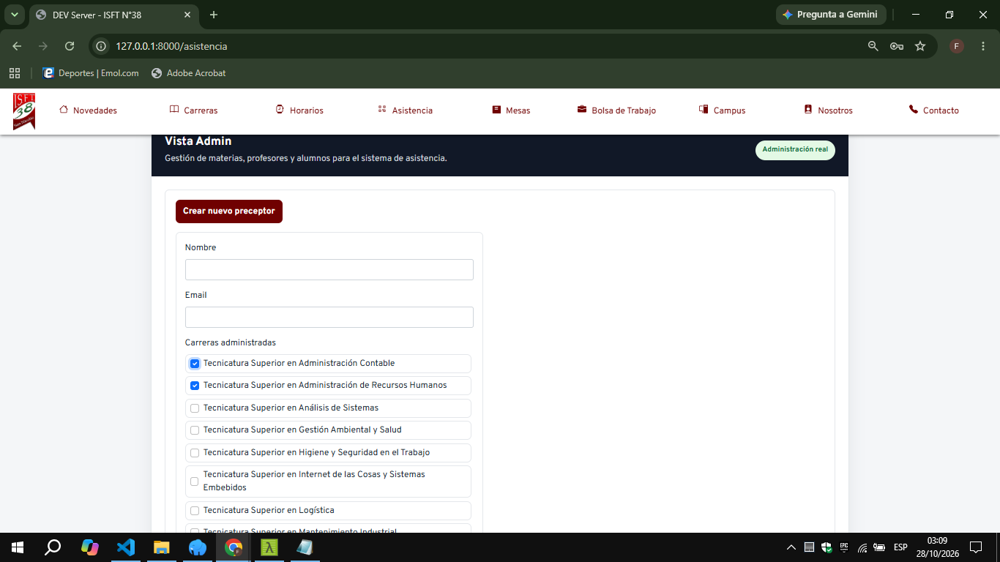
Figura 14. Formulario de la directora para crear un preceptor y seleccionar las carreras que administrará.
8.2 Reasignar carreras
- Abra Carreras de preceptores.
- Seleccione las carreras del usuario y guarde.
- Si una carrera ya tiene responsable, revise Confirmar cambio de preceptor.
- Elija Sustituir y guardar solo si corresponde; de lo contrario cancele.
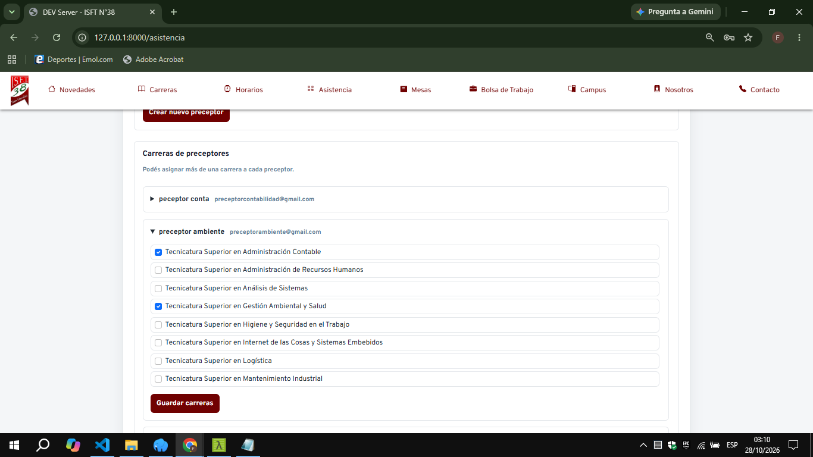
Figura 15. Gestión de las carreras asignadas a cada preceptor.
9. Resolución de problemas
| Mensaje o síntoma | Causa probable | Qué hacer |
|---|
| DNI/correo o contraseña incorrectos | Credencial inválida. | Revise escritura y solicite restablecimiento al administrador. |
| Acceso denegado | El rol o ámbito no autoriza. | Vuelva al panel; pida revisar rol/carrera si corresponde. |
| No estás asignado a esta materia | Falta alumno–materia. | Solicite asignación al profesor o preceptor. |
| El profesor no puede acceder | No figura en el horario. | El preceptor debe asignarlo. |
| La materia no tiene día de cursada | Horario incompleto. | Configure el día en Horarios. |
| Solo se puede tomar asistencia el día de cursada | Fecha no habilitada. | Use la fecha correspondiente. |
| Días anteriores: solo lectura | Se intentó editar historia. | Eleve la rectificación al responsable técnico. |
| Seleccione motivo de justificación | Falta enfermedad/trabajo. | Complete el motivo. |
| QR inhabilitado o de otra fecha | Código cerrado/antiguo. | Pida uno nuevo o habilitado. |
| La cámara no abre | Permiso, navegador o HTTPS. | Habilite cámara, actualice navegador o use la cámara del teléfono. |
| 419 Page Expired | Sesión vencida. | Recargue, ingrese otra vez y repita. |
| Error 500/pantalla vacía | Falla técnica. | No repita eliminaciones; registre hora y pantalla y contacte soporte. |
Contacte soporte inmediatamente si ve datos de otra carrera, pérdida de registros, porcentajes incoherentes o sospecha de acceso no autorizado.
10. Preguntas frecuentes
¿Puedo ingresar con DNI?
Sí, cuando la cuenta de alumno está vinculada por DNI. Los demás perfiles utilizan normalmente correo.
¿Puedo registrar dos veces el mismo QR?
El sistema actualiza el único registro de alumno, materia y fecha; no duplica la asistencia.
¿Cómo cuenta una tardanza?
Como 0,5 presencia. Una justificación queda separada y no suma presencia.
¿Por qué hoy no aparece en la planilla?
La materia debe tener configurado el día actual y estar asignada al profesor en el horario.
¿Puedo corregir una fecha anterior?
No desde la interfaz. Debe seguirse el procedimiento institucional y técnico para conservar trazabilidad.
¿Qué sucede al generar otro QR?
Los QR anteriores de esa materia para hoy quedan inhabilitados.
¿Por qué veo otra pantalla que un compañero?
Las opciones dependen del rol y de las carreras o materias asignadas.
11. Glosario
| Término | Definición |
|---|
| ABM | Alta, baja y modificación de datos. |
| Asignación | Vínculo que habilita a una persona en una materia o carrera. |
| Planilla diaria | Estados de asistencia de una materia en una fecha. |
| QR | Código visual con enlace único para registrar presente o tarde. |
| Registro | Ficha académica del alumno, distinta de la cuenta de acceso. |
| Rol | Conjunto de permisos. |
| Ausencia automática | Ausencia mostrada cuando hubo clase pero el alumno no tiene estado individual. |
12. Soporte y consulta rápida
Cómo pedir ayuda
Contacte al administrador institucional del Sistema de Asistencia por el canal definido por el ISFT N.° 38. Informe nombre y rol, carrera, materia, fecha/hora, acción realizada, mensaje exacto, navegador/dispositivo y una captura sin contraseñas ni datos innecesarios.
Efecto de cada estado
| Estado | Valor de presencia | Dato adicional |
|---|
| Presente | 1 | — |
| Tarde | 0,5 | — |
| Ausente | 0 | — |
| Justificado | 0 | Enfermedad o trabajo |
Flujo rápido
- Alumno: Ingresar → Mis materias → Escanear QR / Ver materia.
- Profesor: Ingresar → Materia → Tomar asistencia → Guardar → Cerrar QR.
- Preceptor: Ingresar → Elegir carrera → Administrar alumnos/profesores/materias.
- Directora: Ingresar → Usuarios → Crear preceptor → Asignar carreras.
Lista de comprobación
- Cierre sesión en equipos compartidos.
- No comparta contraseñas ni capturas de QR.
- Verifique materia, fecha y tipo antes de generar el QR.
- Revise el mensaje de confirmación después de guardar.
- Imprima o exporte solo la información necesaria.
Fin del Manual de Usuario — versión 2.0.